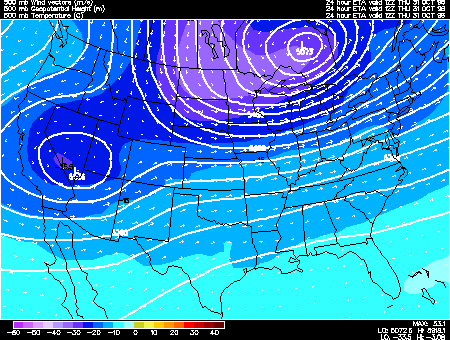
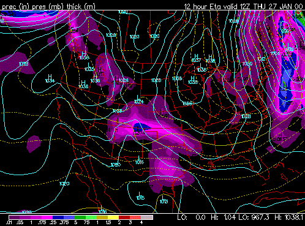
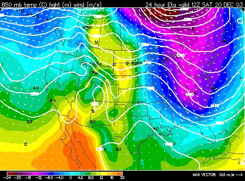
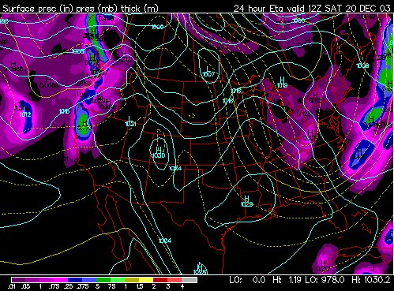

Geopotential height approximates the actual height of a pressure surface above mean sea-level. Therefore, a geopotential height observation represents the height of the pressure surface on which the observation was taken. A line drawn on a weather map connecting points of equal height (in meters) is called a height contour. That means, at every point along a given contour, the values of geopotential height are the same. An image depicting the geopotential height field is given below.  Height contours are represented by the solid lines. The small numbers along the contours are labels which identify the value of a particular height contour (for example 5640 meters, 5580 meters, etc.). This example depicts the 500 mb geopotential height field and temperatures (color filled regions). The height field is given in meters with an interval of 60 meters. Geopotential height is valuable for locating troughs and ridges which are the upper level counterparts of surface cyclones and anticyclones. The primary characteristic of a trough is that it is a region with relatively lower heights. Height is a primary function of the average temperature of the air below that height surface. For example, if it is 500 mb heights then the 500 mb height is based on the average temperature between the surface and 500 millibars. The density of air changes with temperature. As the temperature of air cools in becomes more dense and thus more compacted (takes up less volume). Thus, as air cools the height lowers since the air is becoming more dense. Air will cool when it rises, thus a trough can be found where there is a lifting of air. A trough can also be found in a region dominated by a very cold air mass. This troughing will be most pronounced in the upper levels. A trough can bring in cloudy conditions and precipitation or they can bring in a cold air mass. A ridge is a region with relatively higher heights. A broad region of sinking air or a deep warm air mass will both lead to ridging. Since air is often sinking within a ridge they tend to bring warmer and drier weather. |
theweatherprediction.com It is important to know (1) what thickness lines are, (2) the numerical value of each thickness line on the prog, and (3) applying the thickness lines to forecasting CAA and WAA. A thickness line is the vertical distance in meters between two pressure levels. The models commonly use the 1000 to 500 millibar thickness. The thickness is the vertical distance in meters from the 1000 to the 500 millibar level. The 1000 to 500 mb thickness is a function of two properties, (1) the average temperature of the air between 1000 and 500 millibars and (2) the average moisture content of the air between 1000 and 500 millibars. These two properties are combined together to produce the virtual temperature. Therefore, thickness is a function of the average virtual temperature between 1000 and 500 millibars. Thickness will INCREASE if the average virtual temperature increases (either temperature increasing or moisture content increasing or both). Thickness will DECREASE if the average virtual temperature decreases (either temperature decreasing or moisture content decreasing or both). Thickness will increase due to WAA or diabatic warming (solar heating). Thickness will decrease due to CAA or diabatic cooling (longwave cooling, evaporational cooling, etc.). The thickness values will be higher in the lower latitudes and the thickness values will be lower in the high latitudes. The thickness lines will be packed close together where there is a large temperature gradient in the atmosphere. Below this essay is an embedded image of the press/prec/thickness chart. Thickness is shown by the dashed and solid YELLOW ISOPLETHS. The thickness lines are displayed in increments of 60 geopotential meters. The solid yellow lines guide you to interpreting the value of each thickness line. The 5,700, 5,400 and 5,100 thickness lines will be shown in solid yellow. A thickness of less than 5,100 is associated with arctic air while a thickness of 5,700 or greater is associated with tropical air. The 5,400 line generally divides polar air from mid-latitude air. The 5,400 line is also used as a guide to the rain/snow line. On this chart, the 540 (another way of expressing 5,400 gpm) runs through Mississippi (follow its path across the entire U.S.). Everywhere north of this solid line, the thickness is LESS than 5,400. The first dashed line north of the 540 line is the 534 line (remember the lines are in increments of 60 gpm). The line dashed to the south of the 540 line is the 546 line. It makes sense that the thicknesses tend to decrease when moving north because the air tends to get colder as you go north. In this example below, the 570 line is in Mexico and the 510 line is between the Great Lakes and New England. Thickness near 510 will be associated with very cold air  The next stage is to apply your knowledge of the thickness lines. When cold air moves south, lower thickness lines will be associated with this cold air. In the example, cold air is filtering toward the south (wind speed and direction can be inferred using the blue isobars) in the eastern U.S. and this region has lower heights associated with it. CAA is associated with decreasing heights and WAA with increasing heights. |
theweatherprediction.com Notice the strong temperature gradient (gradient of color) across the central U.S. on the 850 mb image below. Temperature are much higher in the western Plains than in the eastern United States. Since thickness is a function of the average temperature of a layer of air, then there will be a thickness gradient in the same region that the temperature gradient occurs. This thickness gradient can be seen on the thickness chart below (dashed lines). The thickness shown is the 1000 to 500 mb thickness. A forecaster will use these two model images to assess thermal advection. When strong thickness advection occurs, a forecaster knows that thermal advection is occurring also. Warm Air Advection is occurring across the central U.S. This is seen by the wind vectors at 850 mb moving the isotherms toward the east over time. The thickness lines will move to the east also in the central U.S. Strong Warm Air Advection in the lower troposphere contributes to a lifting of air. Clouds and precipitation chances can be expected in these regions especially if the air being lifted is saturated.   |
"Thickness" is a measure of how warm or cold a layer of the atmosphere is, usually a layer in the lowest 5 km (17,000 feet) of the troposphere; high values mean warm air, and low values mean cold air. It would be perfectly feasible to define the average temperature of a layer in the atmosphere by calculating its mean value in degrees C (or Kelvin) between two vertical points, but an easier, practical way to measure this same mean temperature between two levels can be gained by subtracting the lower height value of the appropriate isobaric surface from the upper. Thus one measure of thickness commonly quoted is: In practical meteorology, the most common layers wherein thickness values are analysed and forecast are: 500-1000 hPa; 850-1000 hPa; 700-1000 hPa; 700-850 hPa and 500-700 hPa. By subtracting the lower (height) value from the upper value, a positive number is always gained. The 500-1000 hPa value is used to define 'bulk' airmass mean temperature, and can be seen on several products available on the Web. The other 'partial' thicknesses are used for special purposes, for example, the 850-1000 hPa thickness is used for snow probability and maximum day temperature forecasting, as it more accurately defines the mean temperature of the lowest 1500 m (5000 ft) or so of the atmosphere. Advection is simply the meteorologists word for movement of air in bulk. When we talk about warm advection, we mean that warm air replaces colder air, and vice-versa. These 'bulk' movements of air of differing temperatures can be seen very well on thickness charts, and differential advection, important in studies of stabilization / de-stabilization, can also be inferred by considering advection of partial thicknesses. If you pull up thickness charts from the web, it it useful to highlight the isopleths of thickness, and work out, from either the mslp pattern, or the 500 hPa pattern, whether cold or warm advection is taking place. It should be possible with practice to find warm and cold fronts (tight thickness pattern), and areas where the thermal gradient (spacing of thickness lines) is changing - note particularly areas where developments tend to decrease spacing of thickness lines -->> increased potential for atmospheric development. Can the 500-1000 hPa patterns be used to infer the snow risk? Well, yes they can, but because the layer is so deep -- some 5 km, or 17,000 ft of the lower atmosphere, its not a good indicator. Rain and snow are equally likely when the 500-1000 hPa thickness is about 5225 gpm (or 522 dam). Rain is rare when the 500-1000 hPa thickness is less than 5190 gpm. Snow is extremely rare when the 500-1000 hPa thickness is greater than 5395 gpm. [ Q ] Thickness? ....thickness of what? [ A ] From time to time in meteorology newsgroups, the word 'thickness' is used, particularly when talking about snow probability, or the prospect of warmer, or colder weather generally. If you simply want to remember that 'Thickness' is a measure of how warm or cold a layer of the atmosphere is, usually a layer in the lowest 5 km, or 17,000 ft of the troposphere, and that high values mean warm air, and low values mean cold air, then you can ignore the rest of this FAQ. If you wish to know a little more, read on! [ Q ] What is 'Thickness' and how is it measured? [ A ] Although it would be perfectly feasible to define the average temperature of a layer in the atmosphere by quoting/calculating its mean value in degrees C (or Kelvin) between two vertical points, from the early days of upper air meteorology, it was realized that from the hydrostatic equation, an easy to calculate measure of this same mean temperature between two levels could be gained by subtracting the lower height value of the appropriate isobaric surface from the upper. The hydrostatic equation, in its simplified form, is -dp/dz = pg/RT ...... Eq(a) here:
Eq (a) states that the change of pressure with height (above a point where the total pressure of the column is p), is governed by the mean temperature over the vertical distance involved. Thus in cold air/low T values, -dp/dz is larger than in warm air/high T. ... or putting it another way, lets start out at 1000 hPa and ascend vertically; in cold air, you would reach the level of 500 hPa sooner (greater rate of change of p) than in warm air. Thus the vertical distance from the level of 1000 hPa to the level of 500 hPa is less in cold air than in warm air Thickness can be calculated from the heights reported on a radio-sonde ascent, or a thermodynamic diagram can be used to add up the partial thicknesses over successive layers to achieve the net (total) thickness. An example of the former would be Careful note must be made when the height of the 1000 hPa surface is below msl thus: 500 hPa height = 5524 m [ Q ] What are the most common layers through which the thickness is analysed / forecast and what are they used for? [ A ] In practical meteorology, the most common layers wherein thickness values are analysed and forecast are: 500-1000 hPa; 850-1000 hPa; 700-1000 hPa; 700-850 hPa and 500-700 hPa. By subtracting the lower (height) value from the upper value, a positive number is always gained. Some values are quoted in metres, and others dekametres (tens of metres), dependent upon the use to which the value is put. In general, when dealing with the lower atmosphere, metres are used to better refine the output to the inferred surface parameter (e.g. maximum temperature), whilst for the deeper layers, dekametres (10's of metres) are sufficiently accurate.) Z2 - Z1 = RT/g * ln(p1/p2) ..... Eq(b) replace p1 and p2 by 1000 hPa and 500 hPa respectively thus for 5640 m thickness --- this represents a mean T = +5 degC 850-1000 hPa: This is useful for defining the temperature structure in the lowest 1500 m (5000 ft) or so of the atmosphere, and can therefore be used in such things as rain/snow prediction, maximum temperature forecasting etc. 700-1000 hPa: Similar to 500-1000 hPa but focussed rather more on the lowest 3 km (10,000 ft) of the atmosphere and therefore an attempt to combine the broader measure of the 500-1000 hPa and the finer details obtained by layers nearer the earth's surface. 500-700 hPa/700-850 hPa: Used in studies of differential thermal advection, particularly when considering possible convection, degrees of instability etc. |
theweatherprediction.com As you well know, the two types of vorticity advection are PVA and NVA while the two types of height change are height falls and height rises. PVA promotes upper level divergence and rising air. Rising air will cause the average virtual temperature of air to decrease because rising air cools. Cooling through a deep layer of the troposphere not only causes the average temperature of the air to decrease, it also increases the average density of the air and subsequently lowers the thickness of the troposphere. If thicknesses decrease, the height change tendency will be for height falls. Therefore, PVA IS ACCOMPANIED BY HEIGHT FALLS. Since NVA causes sinking air, the air warms. The warming causes an increase of thickness. If thickness increases, the height change tendency will be for height rises. Therefore, NVA IS ACCOMPANIED BY HEIGHT RISES. As a 500 mb shortwave approaches and the dynamic forcing over the forecast region is only from vorticity advection, the PVA region will act to lower heights and increase the likeliness of clouds and precipitation. As the shortwave leaves and heights rise, the NVA pattern takes over and clouds and precipitation become less likely. |